In 2021, Teatro Carlo Felice in Genoa inaugurated its season with an extraordinary production of Pagliacci, created in collaboration with Rai Cultura. Directed by Cristian Taraborrelli, this staging marked a genuine revolution in the theatrical experience: for the first time in opera history, 3D augmented reality was integrated into a live performance.
This pioneering approach transformed the stage into a three-dimensional emotional space, dissolving the boundaries between physical reality and imagination, and immersing the audience in a completely new scenic dimension. The entirely virtual scenery was reconstructed behind the performers, shifting according to the various camera angles to offer a dynamic, mobile perspective — allowing the singers greater freedom of movement than traditional painted backdrops ever could.
Nel 2021, il Teatro Carlo Felice di Genova ha inaugurato la stagione con una straordinaria produzione dei Pagliacci, creata in collaborazione con Rai Cultura. La regia di Cristian Taraborrelli ha segnato una vera rivoluzione nell’esperienza teatrale: per la prima volta nella storia dell’opera lirica, la realtà aumentata in 3D è stata integrata in una performance dal vivo.
Questo approccio pionieristico ha trasformato il palcoscenico in uno spazio emozionale tridimensionale, dissolvendo i confini tra realtà fisica e immaginazione, immergendo il pubblico in una dimensione scenica completamente nuova. La scenografia interamente virtuale veniva ricostruita dietro gli interpreti, cambiando a seconda delle angolazioni delle varie telecamere per offrire una prospettiva dinamica e mobile — garantendo ai cantanti una libertà di movimento impossibile con le tradizionali quinte dipinte.
En 2021, le Teatro Carlo Felice de Gênes a inauguré sa saison avec une extraordinaire production de Pagliacci, créée en collaboration avec Rai Cultura. La mise en scène de Cristian Taraborrelli a marqué une véritable révolution dans l’expérience théâtrale : pour la première fois dans l’histoire de l’opéra, la réalité augmentée en 3D a été intégrée dans une performance live.
Cette approche pionnière a transformé la scène en un espace émotionnel tridimensionnel, dissolvant les frontières entre réalité physique et imagination, et plongeant le public dans une dimension scénique entièrement nouvelle. Le décor entièrement virtuel était reconstruit derrière les interprètes, changeant selon les angles des différentes caméras pour offrir une perspective dynamique et mobile — offrant aux chanteurs une liberté de mouvement impossible avec les toiles peintes traditionnelles.
Una Nuova Era per l’Opera
For the first time in the history of opera, augmented reality entered the stage not as a technological gadget, but as a dramaturgical tool. Canio’s visions, Nedda’s dreams, the irrationality of jealousy — all of this became visible to the audience through a digital layer superimposed on the reality of the stage.
The entirely virtual scenery was processed in real time by five cameras. A green-screen background allowed the AR programme to recognise each performer’s silhouette, isolate it, and place three-dimensional objects behind them. The audience in the theatre experienced a dual viewing plane: the singers moving on a real floor, with a large LED screen above displaying the final augmented result. Rai 5 then added further camera angles for the television broadcast.
The visual splendour was further enhanced by Angela Buscemi’s magnificent costumes, blending tradition and modernity in perfect harmony. The stellar cast featured tenor Fabio Sartori as Canio, soprano Serena Gamberoni as Nedda, and baritone Sebastian Catana as Tonio.
Per la prima volta nella storia dell’opera lirica, la realtà aumentata è entrata in scena non come gadget tecnologico, ma come strumento drammaturgico. Le visioni di Canio, i sogni di Nedda, l’irrazionalità della gelosia — tutto questo è diventato visibile agli occhi del pubblico attraverso un layer digitale sovrapposto alla realtà del palcoscenico.
La scenografia interamente virtuale veniva elaborata in tempo reale da cinque telecamere. Uno sfondo green-screen permetteva al programma AR di riconoscere la sagoma di ciascun interprete, scontornarla e posizionare oggetti tridimensionali alle loro spalle. Il pubblico in sala viveva un doppio piano di visione: i cantanti che si muovevano su un pavimento reale, con un grande schermo LED sopra che mostrava il risultato aumentato finale. Rai 5 ha poi aggiunto ulteriori angolazioni di ripresa per la trasmissione televisiva.
Lo splendore visivo era ulteriormente arricchito dai magnifici costumi di Angela Buscemi, che fondevano tradizione e modernità in perfetta armonia. Il cast stellare comprendeva il tenore Fabio Sartori come Canio, il soprano Serena Gamberoni come Nedda e il baritono Sebastian Catana come Tonio.
Pour la première fois dans l’histoire de l’opéra, la réalité augmentée est entrée en scène non pas comme un gadget technologique, mais comme un outil dramaturgique. Les visions de Canio, les rêves de Nedda, l’irrationalité de la jalousie — tout cela est devenu visible aux yeux du public à travers une couche numérique superposée à la réalité de la scène.
Le décor entièrement virtuel était traité en temps réel par cinq caméras. Un fond green-screen permettait au programme AR de reconnaître la silhouette de chaque interprète, de la détourer et de placer des objets tridimensionnels derrière eux. Le public en salle vivait un double plan de vision : les chanteurs se déplaçant sur un sol réel, avec un grand écran LED au-dessus affichant le résultat augmenté final. Rai 5 a ensuite ajouté des angles de caméra supplémentaires pour la diffusion télévisée.
La splendeur visuelle était encore enrichie par les magnifiques costumes d’Angela Buscemi, mêlant tradition et modernité en parfaite harmonie. La distribution stellaire comprenait le ténor Fabio Sartori dans le rôle de Canio, la soprano Serena Gamberoni dans celui de Nedda, et le baryton Sebastian Catana dans celui de Tonio.
Apparato Tecnico
L’allestimento tecnico di Pagliacci ha richiesto un’infrastruttura senza precedenti nel teatro d’opera. Il palcoscenico del Carlo Felice è stato trasformato in un vero e proprio studio televisivo dal vivo: due grandi fondali chroma key in tessuto ATR – Sceno Poly Chroma, il principale di 24×12 metri e un secondario di 20×10 metri, coprivano l’intera scena, mentre il pavimento era rivestito con moquette TCA – Capriccio Chroma verde.
Le videoproiezioni, curate da Luca Attilii, venivano elaborate in tempo reale combinando elementi 2D e 3D di realtà aumentata. Le cinque telecamere riprendevano gli interpreti davanti al green screen; il sistema isolava le sagome e inseriva la scenografia virtuale alle loro spalle, adattandola a ogni angolazione. Fondali a fili Tripolina e schermi in PBO – Bianco Ottico completavano il sistema di proiezioni frontali, sotto la direzione tecnica di Luciano Novelli.
The technical setup of Pagliacci required unprecedented infrastructure for an opera house. The Carlo Felice stage was transformed into a live television studio: two large chroma key backdrops in ATR – Sceno Poly Chroma fabric, the main one measuring 24×12 metres and a secondary one of 20×10 metres, covered the entire scene, while the floor was lined with green TCA – Capriccio Chroma carpet.
The video projections, designed by Luca Attilii, were processed in real time combining 2D and 3D augmented reality elements. Five cameras filmed the performers against the green screen; the system isolated their silhouettes and placed virtual scenery behind them, adapting it to every angle. Tripolina wire backdrops and PBO – Bianco Ottico front projection screens completed the projection system, under the technical direction of Luciano Novelli.
Le dispositif technique de Pagliacci a nécessité une infrastructure sans précédent pour un théâtre d’opéra. La scène du Carlo Felice a été transformée en un véritable studio de télévision en direct : deux grands fonds chroma key en tissu ATR – Sceno Poly Chroma, le principal de 24×12 mètres et un secondaire de 20×10 mètres, couvraient l’ensemble de la scène, tandis que le sol était recouvert de moquette TCA – Capriccio Chroma verte.
Les vidéoprojections, conçues par Luca Attilii, étaient traitées en temps réel en combinant des éléments de réalité augmentée 2D et 3D. Cinq caméras filmaient les interprètes devant le green screen ; le système isolait leurs silhouettes et plaçait le décor virtuel derrière eux, en l’adaptant à chaque angle. Des fonds à fils Tripolina et des écrans de projection frontale PBO – Bianco Ottico complétaient le système, sous la direction technique de Luciano Novelli.
Foto di Scena

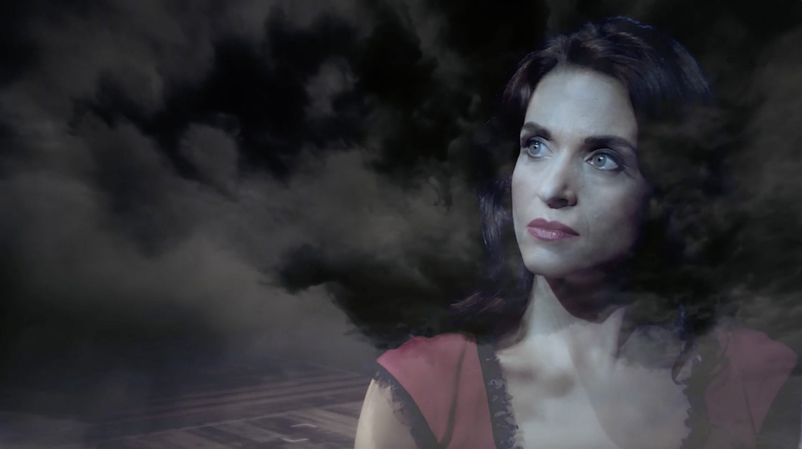
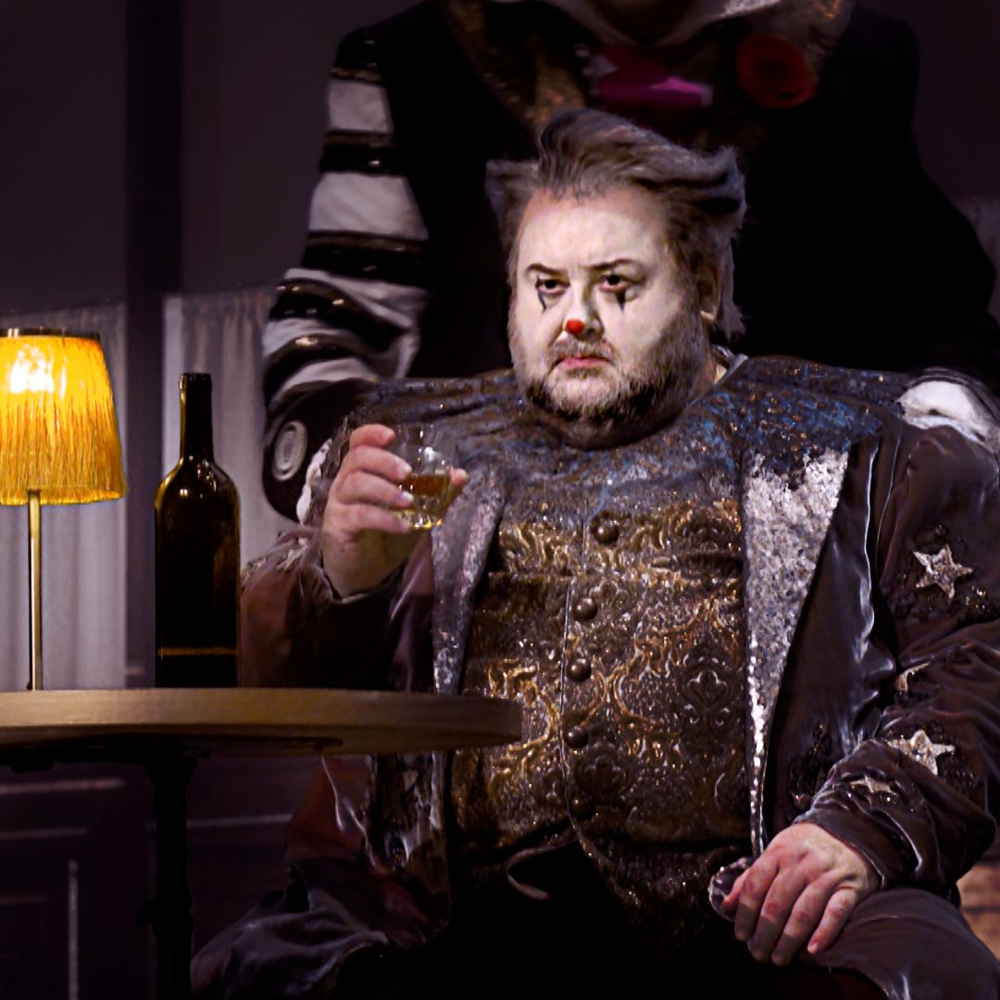
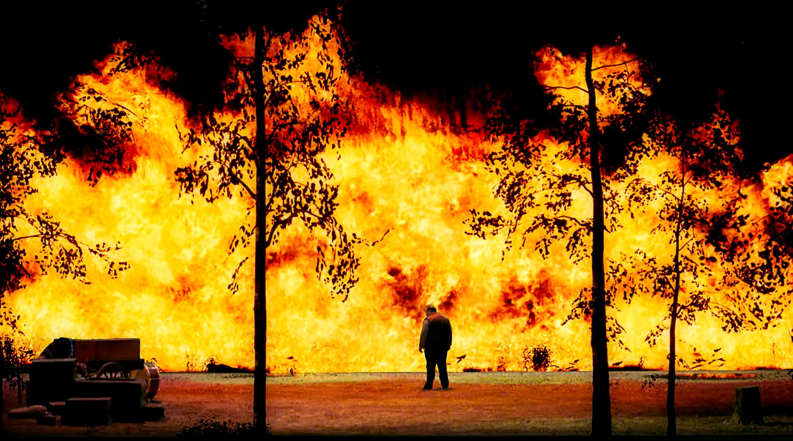
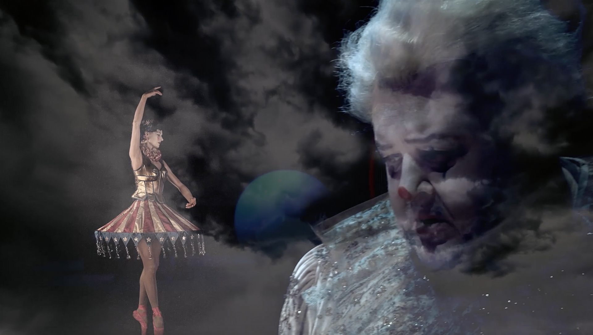
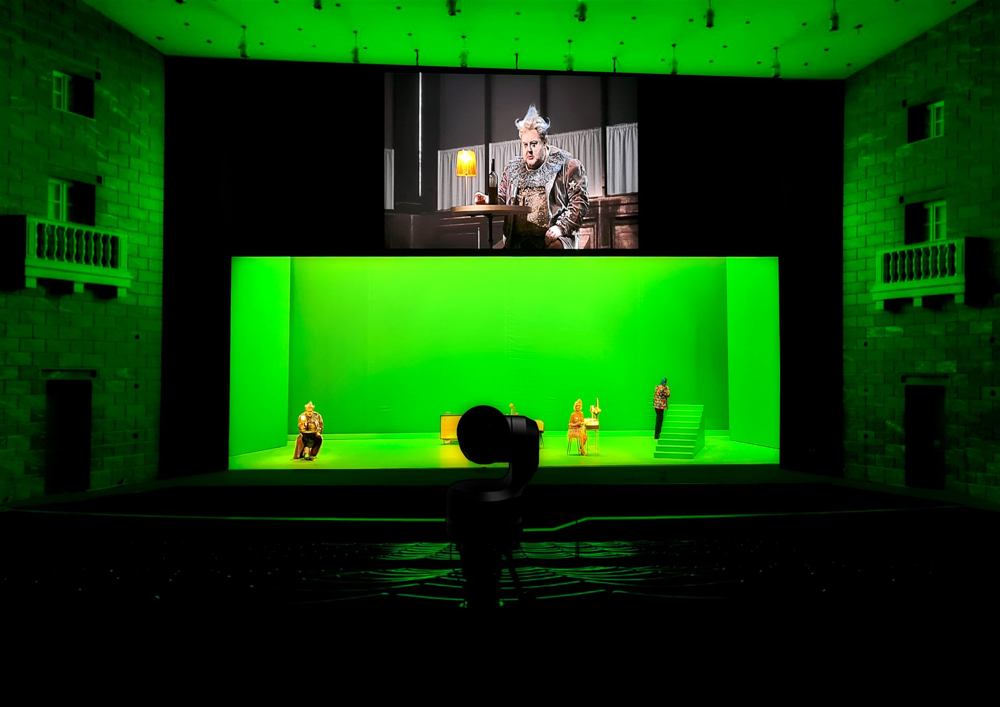
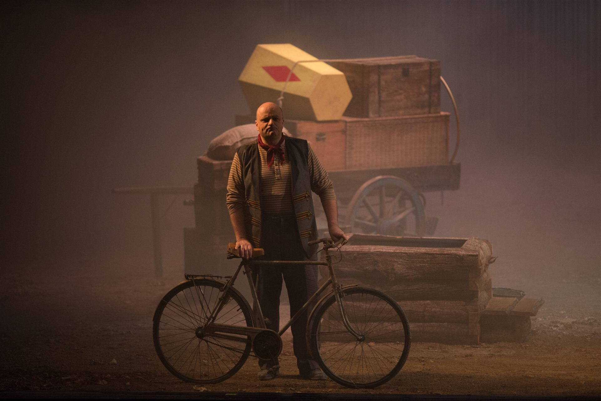
Video
Costumi — Angela Buscemi
Angela Buscemi’s costume designs for Pagliacci blend the commedia dell’arte tradition with a contemporary sensibility. Each figurino captures the dual nature of Leoncavallo’s characters — performers on stage and tortured souls behind the mask — through bold colours, theatrical silhouettes, and meticulous period details reimagined for a production where reality and illusion constantly intertwine.
I figurini di Angela Buscemi per Pagliacci fondono la tradizione della commedia dell’arte con una sensibilità contemporanea. Ogni figurino cattura la doppia natura dei personaggi di Leoncavallo — artisti in scena e anime tormentate dietro la maschera — attraverso colori audaci, silhouette teatrali e dettagli d’epoca meticolosi, reimmaginati per una produzione dove realtà e illusione si intrecciano continuamente.
Les figurines d’Angela Buscemi pour Pagliacci mêlent la tradition de la commedia dell’arte avec une sensibilité contemporaine. Chaque figurine capture la double nature des personnages de Leoncavallo — artistes sur scène et âmes tourmentées derrière le masque — à travers des couleurs audacieuses, des silhouettes théâtrales et des détails d’époque méticuleux, réimaginés pour une production où réalité et illusion s’entrelacent constamment.
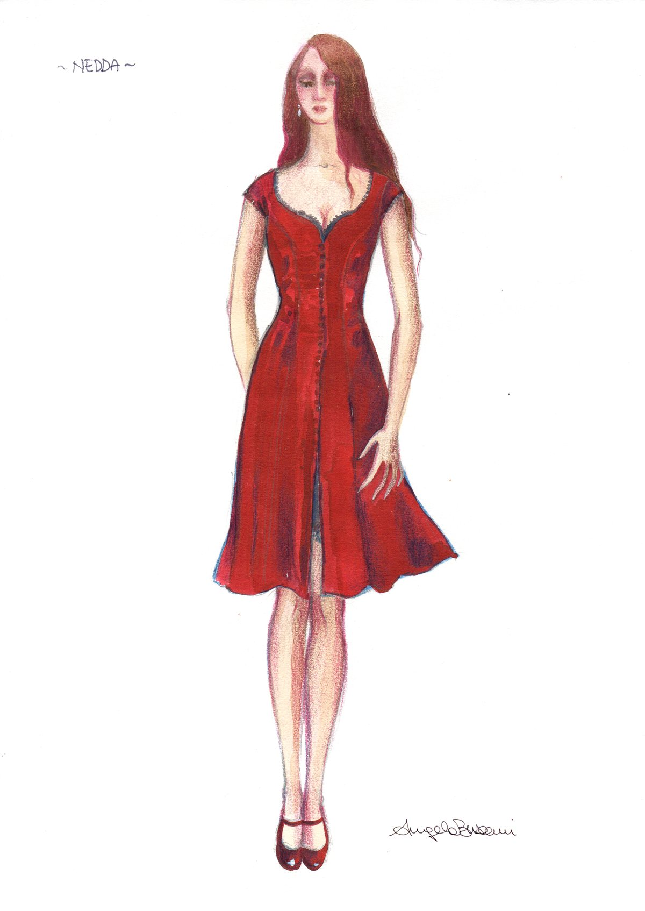
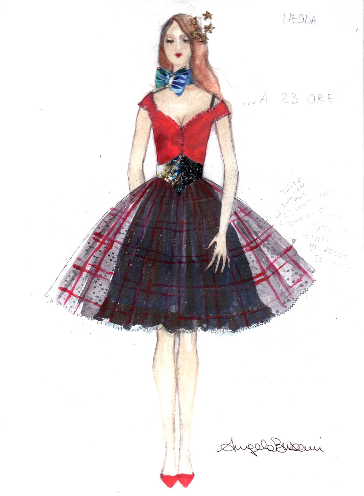
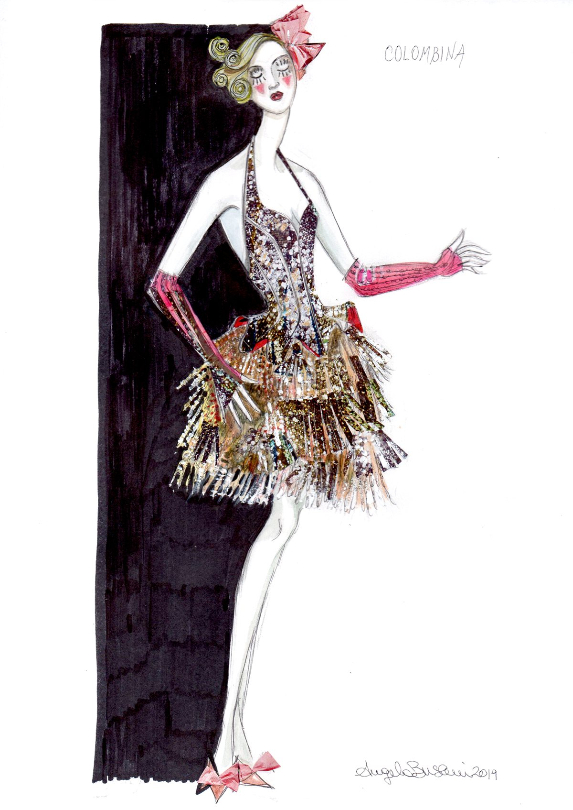
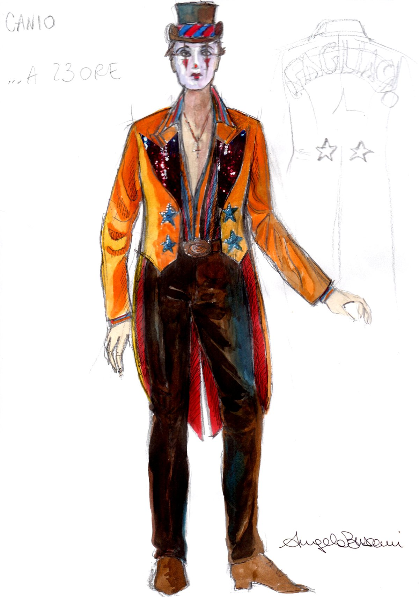
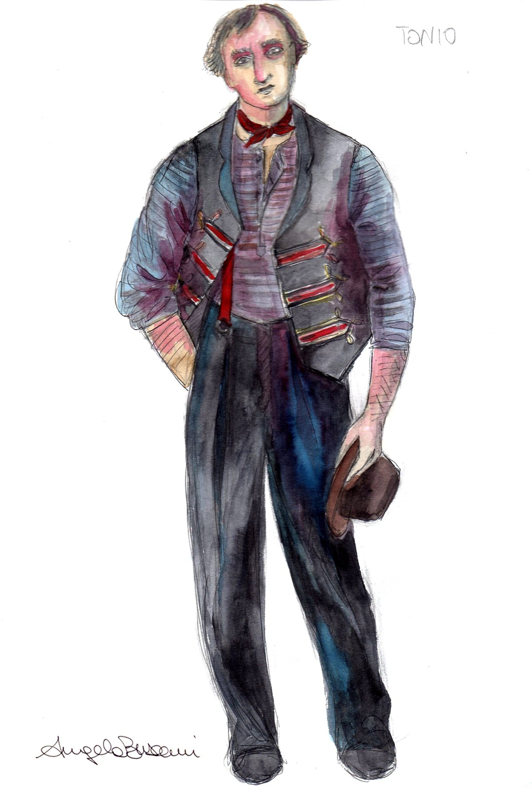
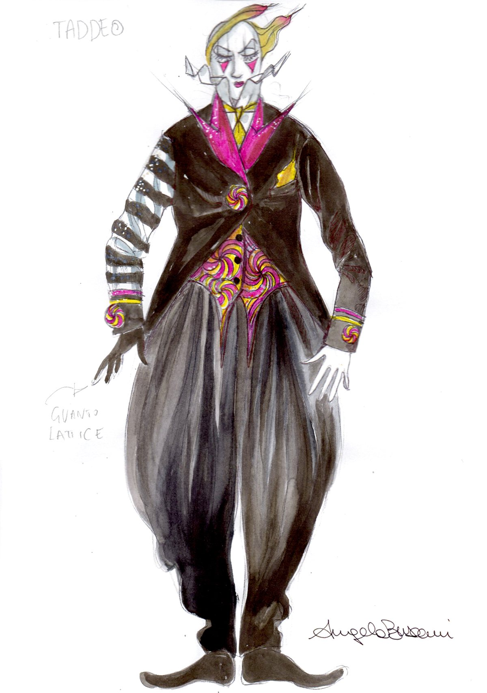
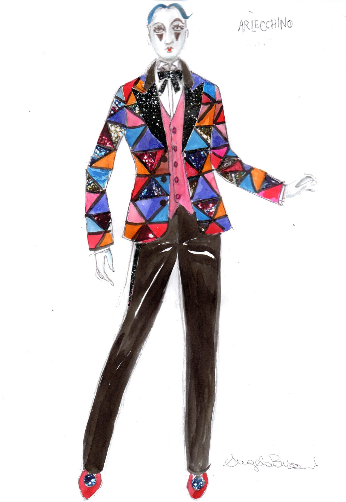
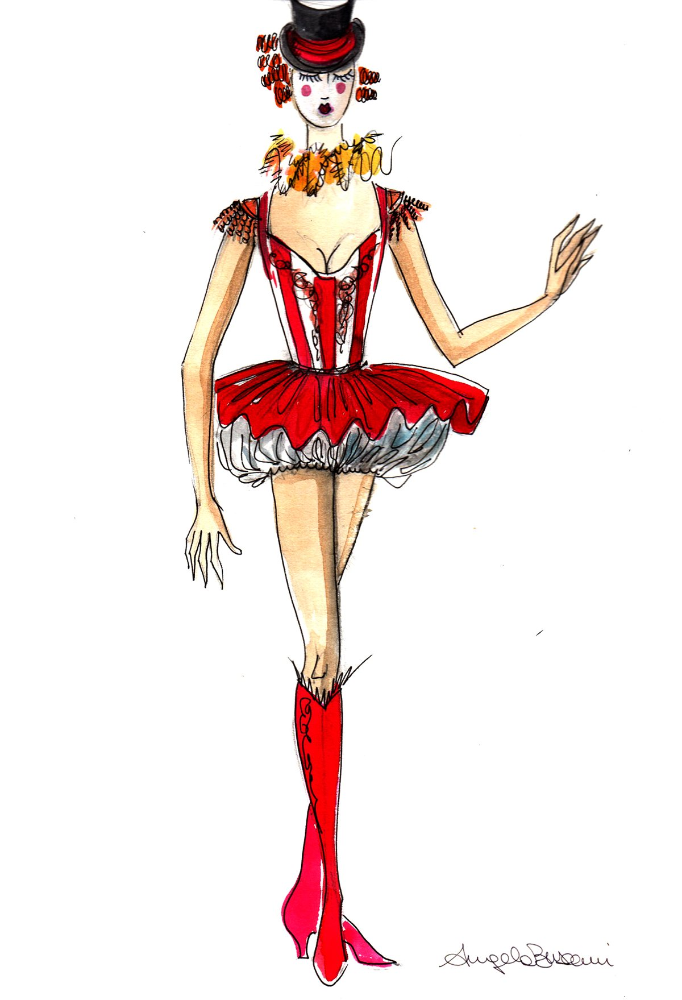
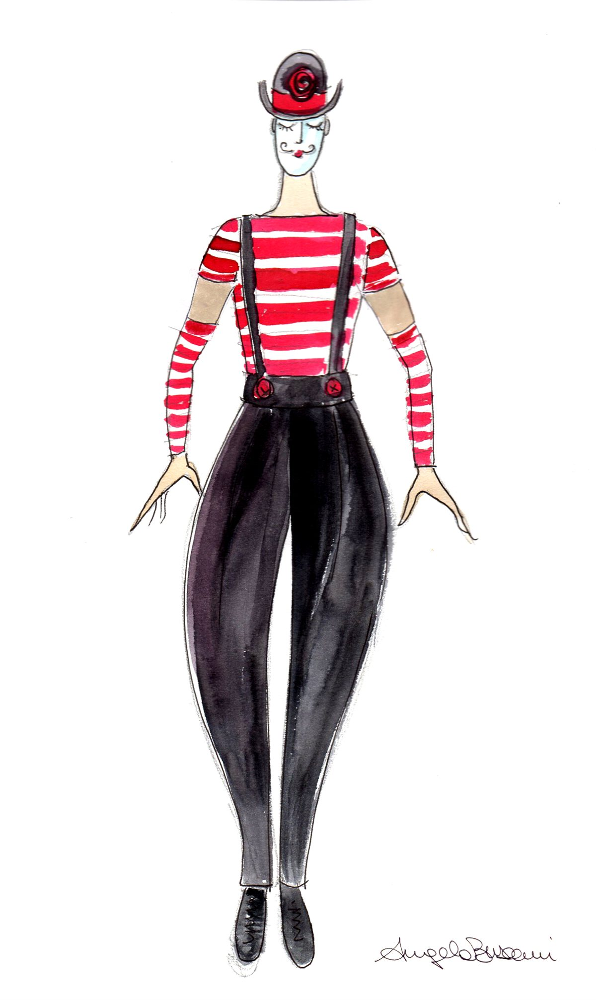
La Visione
“For me, set design has never been merely descriptive”, explains Cristian Taraborrelli. “The scenography is a multiplier of the emotion the singer is feeling in that moment. In Nedda’s aria, when she describes the birds, the music paints the nature around her — and augmented reality gives that inner landscape a visible, three-dimensional form.”
Taraborrelli worked on a dual level of direction: the stage direction experienced by the live audience, and the video transposition seen by the television viewer. The traditional perspective problem — where a painted backdrop only works from a single viewpoint — was completely dissolved: the AR programme processed 3D images in real time, adapting the virtual scenery to every camera angle and every movement of the singer.
“Per me la scenografia non è mai stata solo descrittiva”, spiega Cristian Taraborrelli. “La scenografia è un moltiplicatore del sentimento che prova il cantante in quel momento. Nell’aria di Nedda, quando racconta degli uccelli, la musica descrive la natura che le sta intorno — e la realtà aumentata dà a quel paesaggio interiore una forma visibile e tridimensionale.”
Taraborrelli ha lavorato su un doppio livello di regia: la regia sul palco vissuta dal pubblico in sala, e la regia trasposta sul video vista dallo spettatore televisivo. Il problema prospettico tradizionale — dove una quinta dipinta funziona solo da un unico punto di vista — veniva completamente dissolto: il programma AR elaborava immagini 3D in tempo reale, adattando la scenografia virtuale a ogni angolazione della telecamera e a ogni movimento del cantante.
« Pour moi, la scénographie n’a jamais été simplement descriptive », explique Cristian Taraborrelli. « La scénographie est un multiplicateur de l’émotion que ressent le chanteur à cet instant. Dans l’air de Nedda, quand elle décrit les oiseaux, la musique peint la nature qui l’entoure — et la réalité augmentée donne à ce paysage intérieur une forme visible et tridimensionnelle. »
Taraborrelli a travaillé sur un double niveau de mise en scène : la direction scénique vécue par le public en salle, et la transposition vidéo vue par le spectateur télévisuel. Le problème perspectif traditionnel — où une toile peinte ne fonctionne que d’un seul point de vue — était entièrement dissous : le programme AR traitait les images 3D en temps réel, adaptant le décor virtuel à chaque angle de caméra et à chaque mouvement du chanteur.
La Venue — Teatro Carlo Felice
The Teatro Carlo Felice, named after King Charles Felix of Sardinia, is the principal opera house of Genoa. Designed by architect Carlo Barabino, it was inaugurated on 7 April 1828 with Bellini’s Bianca e Fernando. The original theatre could seat 2,500 spectators across five tiers of 33 boxes each.
Almost entirely destroyed during World War II by Allied bombings in 1943 and 1944, only the neoclassical facade survived. Genoa went over 40 years without its principal opera house, holding seasons in a converted cinema. The reconstruction, led by architect Aldo Rossi alongside Ignazio Gardella, preserved Barabino’s original facade while creating an entirely modern interior inspired by Wagner’s Bayreuth Festspielhaus. The theatre reopened in June 1991 with 2,000 seats and a 63-metre scenic tower.
Il Teatro Carlo Felice, intitolato al re Carlo Felice di Sardegna, è il principale teatro d’opera di Genova. Progettato dall’architetto Carlo Barabino, fu inaugurato il 7 aprile 1828 con la Bianca e Fernando di Bellini. Il teatro originale poteva ospitare 2.500 spettatori distribuiti su cinque ordini di 33 palchi ciascuno.
Quasi completamente distrutto durante la Seconda Guerra Mondiale dai bombardamenti alleati del 1943 e 1944, sopravvisse solo la facciata neoclassica. Genova è rimasta senza il suo teatro principale per oltre 40 anni, ospitando le stagioni in un cinema adattato. La ricostruzione, guidata dall’architetto Aldo Rossi con Ignazio Gardella, ha conservato la facciata originale di Barabino creando un interno interamente moderno ispirato al Festspielhaus di Bayreuth di Wagner. Il teatro ha riaperto nel giugno 1991 con 2.000 posti e una torre scenica di 63 metri.
Le Teatro Carlo Felice, nommé d’après le roi Charles-Félix de Sardaigne, est le principal opéra de Gênes. Conçu par l’architecte Carlo Barabino, il fut inauguré le 7 avril 1828 avec Bianca e Fernando de Bellini. Le théâtre original pouvait accueillir 2 500 spectateurs répartis sur cinq niveaux de 33 loges chacun.
Presque entièrement détruit pendant la Seconde Guerre mondiale par les bombardements alliés de 1943 et 1944, seule la façade néoclassique a survécu. Gênes est restée plus de 40 ans sans son théâtre principal, accueillant les saisons dans un cinéma reconverti. La reconstruction, dirigée par l’architecte Aldo Rossi aux côtés d’Ignazio Gardella, a conservé la façade originale de Barabino tout en créant un intérieur entièrement moderne inspiré du Festspielhaus de Bayreuth de Wagner. Le théâtre a rouvert en juin 1991 avec 2 000 places et une tour scénique de 63 mètres.
Curiosità
Prima mondiale assoluta. Pagliacci 2021 è stata la prima produzione nella storia dell’opera lirica a integrare la realtà aumentata 3D in uno spettacolo dal vivo. Un primato che ha aperto un nuovo capitolo nel rapporto tra tecnologia e arti performative.
Cinque telecamere, zero quinte. La scenografia tradizionale è stata completamente eliminata. Cinque telecamere elaboravano in tempo reale la scenografia virtuale, ricostruendola dietro ogni interprete con una precisione impossibile per qualsiasi fondale dipinto.
Doppio livello di regia. Taraborrelli ha lavorato simultaneamente su due regie: quella per il pubblico in sala — con il doppio piano di visione tra palco reale e schermo LED — e quella per la trasmissione televisiva di Rai 5, con inquadrature e linguaggio specifici per la camera.
40 anni senza teatro. Il Teatro Carlo Felice è rimasto chiuso dal 1944 al 1991 — quasi mezzo secolo in cui Genova ha tenuto le sue stagioni d’opera in un cinema adattato. La ricostruzione di Aldo Rossi ha creato un interno ispirato al Festspielhaus di Bayreuth di Wagner.
La scenografia emotiva. “La scenografia è un moltiplicatore del sentimento”, dice Taraborrelli. “Per me può essere anche un semplice telo rosso che diventa una passione. Devo raccontare la mia visione e farla arrivare alla gente.”
An absolute world premiere. Pagliacci 2021 was the first production in the history of opera to integrate 3D augmented reality into a live performance. A milestone that opened a new chapter in the relationship between technology and the performing arts.
Five cameras, zero backdrops. Traditional scenery was completely eliminated. Five cameras processed the virtual set in real time, reconstructing it behind each performer with a precision impossible for any painted backdrop.
Dual-level direction. Taraborrelli worked simultaneously on two levels of direction: one for the live audience — with the dual viewing plane between the real stage and the LED screen — and one for the Rai 5 television broadcast, with camera-specific framing and language.
40 years without a theatre. Teatro Carlo Felice was closed from 1944 to 1991 — nearly half a century during which Genoa held its opera seasons in a converted cinema. Aldo Rossi’s reconstruction created an interior inspired by Wagner’s Bayreuth Festspielhaus.
Emotional set design. “Set design is a multiplier of emotion”, says Taraborrelli. “For me it can be as simple as a red cloth that becomes passion. I must tell my vision and make it reach people.”
Une première mondiale absolue. Pagliacci 2021 a été la première production dans l’histoire de l’opéra à intégrer la réalité augmentée 3D dans une performance live. Un jalon qui a ouvert un nouveau chapitre dans la relation entre technologie et arts du spectacle.
Cinq caméras, zéro décors. La scénographie traditionnelle a été entièrement éliminée. Cinq caméras traitaient le décor virtuel en temps réel, le reconstruisant derrière chaque interprète avec une précision impossible pour toute toile peinte.
Double niveau de mise en scène. Taraborrelli a travaillé simultanément sur deux niveaux de direction : celui pour le public en salle — avec le double plan de vision entre la scène réelle et l’écran LED — et celui pour la diffusion télévisée de Rai 5, avec des cadrages et un langage spécifiques à la caméra.
40 ans sans théâtre. Le Teatro Carlo Felice est resté fermé de 1944 à 1991 — près d’un demi-siècle pendant lequel Gênes a tenu ses saisons d’opéra dans un cinéma reconverti. La reconstruction d’Aldo Rossi a créé un intérieur inspiré du Festspielhaus de Bayreuth de Wagner.
La scénographie émotive. « La scénographie est un multiplicateur de l’émotion », dit Taraborrelli. « Pour moi, elle peut être aussi simple qu’un tissu rouge qui devient passion. Je dois raconter ma vision et la faire parvenir aux gens. »
Pubblicazione Internazionale
The artistic and technological significance of this production was documented in a dedicated monograph published by The Scenographer — Theatrical Notebooks (SCSA, London, September 2022). The publication features essays by five international contributors analysing the production from multiple perspectives: scenic space, video dramaturgy, augmented reality technology, costume design, and cinematography. Il significato artistico e tecnologico di questa produzione è stato documentato in una monografia dedicata pubblicata da The Scenographer — Theatrical Notebooks (SCSA, Londra, settembre 2022). La pubblicazione contiene saggi di cinque contributori internazionali che analizzano la produzione da prospettive multiple: spazio scenico, drammaturgia video, tecnologia della realtà aumentata, design dei costumi e cinematografia. La signification artistique et technologique de cette production a été documentée dans une monographie dédiée publiée par The Scenographer — Theatrical Notebooks (SCSA, Londres, septembre 2022). La publication présente des essais de cinq contributeurs internationaux analysant la production sous des angles multiples.
« For over twenty years Taraborrelli has accustomed us to shows in which action on the stage and video projection integrate and complete each other perfectly. » « Taraborrelli da oltre vent'anni ci ha abituato a spettacoli in cui azione sulla scena e videoproiezione si integrano e si completano perfettamente. » « Depuis plus de vingt ans, Taraborrelli nous a habitués à des spectacles où l'action scénique et la vidéoprojection s'intègrent parfaitement. »
— Bruno Di Marino · The Scenographer, 2022
« This double vision 'augments' the show, enhances it, and enables the director to guide the spectator from the inside of the theatre to the outside. » « Questa doppia visione 'aumenta' lo spettacolo, lo arricchisce, e permette al regista di guidare lo spettatore dall'interno del teatro verso l'esterno. » « Cette double vision 'augmente' le spectacle, l'enrichit, et permet au metteur en scène de guider le spectateur de l'intérieur du théâtre vers l'extérieur. »
— Bruno Di Marino · The Scenographer, 2022
« Something that had never before been done in the theatre during an opera: augmented reality in real time. » « Qualcosa che non era mai stato fatto prima a teatro durante un'opera lirica: la realtà aumentata in tempo reale. » « Quelque chose qui n'avait jamais été fait au théâtre pendant un opéra : la réalité augmentée en temps réel. »
— Alessandro Paparatti (Multi Media Mood) · The Scenographer, 2022
« Cristian Taraborrelli conceived Pagliacci in an innovative scenic key, using augmented reality in real time. » « Cristian Taraborrelli ha pensato Pagliacci in una chiave scenica innovativa, usando la realtà aumentata in tempo reale. » « Cristian Taraborrelli a conçu Pagliacci dans une clé scénique innovante, utilisant la réalité augmentée en temps réel. »
— Angela Buscemi (Costume Designer) · The Scenographer, 2022
Stampa & Link
- Teatro.it — Cristian Taraborrelli: con la realtà aumentata invento il mondo sul palco ↗
- Peroni — Scheda tecnica Pagliacci, Teatro Carlo Felice 2021/2022 ↗
- The Scenographer — Theatrical Notebooks · SCSA, London · September 2022 · Monografia dedicata
Team Creativo
Davide Meda (AR Supervisor)
in collaborazione con Rai Cultura
Cast
Tags